宋代词人有一首描写春夏之交景物的词，最后一句是这么写的：“一川烟草，满城风絮，梅子黄时雨。”因为此句，作者贺铸被人誉为“贺梅子”。
这句词对初夏时节风物的描写太生动了，就像“梅子黄时雨”，说的正是初夏梅子上市的时节。
梅子是中国一种古老的果品，但现在很多朋友已经对它感到陌生了，因为它不能直接当水果吃，所以我们在水果市场上难觅它的踪影，久之，大家也没有吃它的习惯了。
其实，梅子有非常好的保健功效。
很多老读者在经过我的介绍后，一到初夏这个月就忙着做梅子酱、梅子干、梅子酒。
的确，如果您了解了梅子的强大保健功效后，就一定会爱上它的。
怎样购买梅子呢？
在梅子的产地，您到市场上就可以买。外地朋友可能不方便，但您可以网购，现在网购真的是非常方便。
我国生长梅子的地域在南方，18个省份都有梅子，最南的地域梅子三四月就熟了，而古人诗中吟咏的梅子是在相对偏北一点的地域，梅子生长期长一点，到小满才会熟。您在网络上找到这些地方的商家，就可以买到梅子了。
梅子上市，先是青梅，再是黄梅，它们的吃法各有不同，您可以根据时令的转换来购买青梅和黄梅，用不同的做法来吃。
青梅
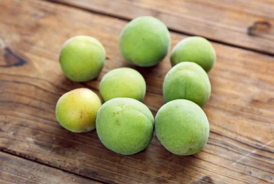
1.经常吃梅子，能刺激腮腺分泌返老还童激素
梅子可以刺激口腔内的腮腺，产生一种激素——返老还童激素，可以使人变得年轻。
三国的时候，有一次曹操带兵出征，途中找不到水源，三军皆渴。曹操心生一计，告诉大家，说前面有一片很大的梅林，结了很多梅子，又甜又酸，可以解渴。士兵们一想到梅子这么酸，嘴里不由得口水直流，自然也就觉得不那么渴了，然后大家一鼓作气往前走。当然，最后没有找到梅林，因为梅林是曹操无中生有的。
梅子真的是非常酸。有一年，我在一家电视台的养生栏目做嘉宾，讲梅子的功效。当时那些青青的梅子作为道具被摆上来以后，主持人很好奇，因为他是北方人，从来没吃过梅子。我告诉他梅子很酸，他说没事儿，不怕酸，然后从盘子里拿起梅子就咬了一口，结果，当时酸得他连话都说不出来了。
为什么梅子会这么酸？因为它刺激到了我们的腮腺。
我们的口腔里会分泌唾液，但每一个部位，比如，舌下面、两腮分泌的唾液都不一样。从两腮腺体分泌的唾液含有一种蛋白类的激素——腮腺素，也就是俗称的返老还童激素，它可以增强我们身体肌肉、血管、骨骼和牙齿活力。
我们身体的返老还童激素，不是从小到老一直在分泌。随着年龄的增长，腮腺会逐渐地萎缩，最后就不分泌激素也不分泌唾液了。所以老年人的腮腺都是萎缩的，他们的唾液都是由口腔的其他部位分泌的。
如果您经常吃梅子，就可以刺激腮腺分泌腮腺素，保持身体活力，这样一来，人就会显得年轻，而且皮肤也会更有弹性。
北宋诗人梅尧臣曾写过一首咏西施的诗，其中两句写道：“食梅莫厌酸，祸福不我猜”。什么意思呢？诗人是在说吃梅子的时候真的不要怕它酸，这个是祸是福，还真不一定呢。
我们现在知道了，吃梅子酸得流口水，其实是帮助我们保持青春容颜的好事情。
2.降血脂、减皮下脂肪
梅子分解油脂的能力非常强，既能降血脂，又能减皮下脂肪，让人变得苗条。
3.保肝
梅子的酸味是专入肝经的，因此，它也是肝脏的保健水果。
为什么梅子的酸味会专入肝经呢？为什么梅子比其他的水果都要酸呢？
这是因为一般的果树都是在春天开花，而梅子却是在冬天开花，初夏果实成熟，是经历了一个相当完整的春天，这是它跟其他水果不一样的地方。
古人也观察到了这一点，他们认为梅子是得到了春之全气，也就是说，春天这三个月的春气都被梅子获得了，因此，梅子是一种属肝味的水果。
春气，在五脏中属肝，在五味中属酸。梅子得到了一个完整的春气，味道才会这么酸，而这个酸，专门入肝经，调理我们的肝脏。
4.清肠
梅子能调节肠道功能，比如，有的人肠胃不太好，吃了不干净的东西以后会连续拉肚子，几天都好不了，吃梅子可以调理。
5.预防癌症
梅子可以净化血液，预防癌症。
在南方民间流传一句话，叫“吃梅接命”，就是说吃梅子可以接续我们的生命，这说明古人早就发现吃梅子是可以延长寿命的。
其实，早在7000多年以前，中国人就开始种植梅树了，也开始吃梅子了，但这样一种非常具有我们中国传统风味的果品，现在的人们对它却感到陌生了，这是一件非常令人惋惜的事情。
读者评论：吃梅接命
溶月荷风：感谢陈老师，我今天才知道我的外婆为何活了90岁，因为她在我很小很小的时候，每年都用盐来腌梅子，然后煮水喝！尤其在夏天，两三个梅子就煮好多水，我也跟着喝！
梅子有着强大的保健功效，我们应该怎么来吃它呢？
梅子很酸，直接吃显然是不太行的，它会伤牙齿，因此，人们 会把它制成青梅酒、冰梅酱和乌梅后再吃。
梅子的上市时间很短，一般只有几周。初夏是梅子大量上市的季节，您在这时候可以多买一些来自制。
梅子刚上市的时候是青色的，称为青梅，可以用来做青梅酒，然后保存起来，可以吃好几年。
等到梅子黄了，变成黄梅，可以拿来做冰梅酱。
而半黄的梅子呢，可以把它熏制成乌梅：将梅子炕焙两到三天，炕下面放上干草和树枝烧，用烧出来的烟来熏梅子。熏到梅子的颜色变成棕褐色，表面起了皱皮，再焖制两到三天，直到梅子的果皮和果肉都变成黑色，就成了道地的中药乌梅，也就是煮酸梅汤的原料。
这种百草熏的乌梅煮出来的汤色是清亮的，喝起来酸味中带点微微的苦味，还有一种淡淡的草烟味。这样的乌梅才有好的保健作用。
说到《三国演义》这一名著，大家都不陌生，其中一段故事尤其被人熟知，那就是青梅煮酒论英雄。说到曹操和刘备在一起喝酒论英雄这一场景，大家都很向往，很多人也想喝一喝青梅煮酒。
其实，曹操请刘备喝的是煮酒，只是在酒桌上摆了一盘青梅作为解酒之用。
因为青梅可以解酒毒，所以古人喝酒的时候，都会备上一盘青梅用来醒酒，这是古人在初夏时令很喜欢的一种风雅之事。
在曹操和刘备煮酒论英雄之后，又过了200多年，南朝大诗人鲍照写道：“忆昔好饮酒，素盘进青梅。”
再往后，又有很多诗人写过类似的喝酒、吃梅子的诗，比如南宋大诗人陆游写《初夏闲居》，第一句就是：“煮酒青梅次第尝，啼莺乳燕占年光。”
可见古人对于青梅是多么推崇，也说明古人在生活中真的是非常讲究养生的细节——即便是在开怀畅饮的时候，也不会忘记备上一盘青梅来解酒毒。
那么，是不是就没有青梅酒呢？其实是有的。当然不是像现在有些人那样，在喝黄酒的时候加一点话梅进去煮，这种喝法，其实是因为黄酒的口味可能不是很好，才加一点话梅来增添它的味道的。
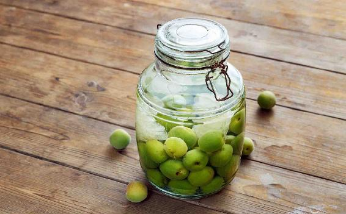
1.喝青梅酒的好处
在浙江、福建等青梅的产地，有一个传统，就是在青梅上市的时候，用青梅来泡酒喝。
青梅泡的酒，味道酸酸甜甜的，有一种梅子的香味，酒精度也会降低很多。
喝青梅酒有两个好处：可以提高睡眠质量；对关节炎有调理作用。
对于家庭主妇来说，青梅酒还可以用来代替料酒做菜，能去腥、解腻，效果比料酒还要好。
我们在烧鱼或者炒肉的时候，可以取一小勺青梅酒沿着锅边转着淋一圈。前提是火要开大，这样酒气才会立刻升腾起来，鱼、肉的腥膻味也会随着酒气蒸发掉，而青梅酒的酸甜味会留下来，增加了菜的滋味，同时也获得了青梅酒的保健功效。
青梅酒还特别适合喜欢在家里经常喝点儿小酒的男性朋友。
2.自己在家如何做青梅酒
青梅酒的做法非常简单，只需我们把青梅、白酒和冰糖一起放到一个大的玻璃瓶里，一起泡就可以了。这三种原料之间的比例，可以按照您的口味来调配。
下面我给您推荐一种我在家自己做青梅酒的做法。
青梅酒如果泡上一年以上，那它的味道会更好，而且可以放上好几年。
青梅酒还有一种传统的做法：就是把青梅用水焯一下再泡。但这样泡出来的青梅酒，会带有梅肉的杂质，因为青梅用水焯过后，它的肉比较容易烂，这样的青梅酒不够清澈，是需要滤渣的。
现在您不需要这样做了，因为以前人们是用井水或者河水来洗梅子的，怕水不够清洁，所以要烧开水来焯一下梅子，这样会更保险。现在我们用的是自来水或纯净水，已经没有这个顾虑了，所以焯水的这一道工序就可以省略了。
青梅酒是可以保存好几年的，您可以一次多泡些，以后几年都来喝它，而且青梅酒里的酒梅干也是可以吃的。
青梅酒
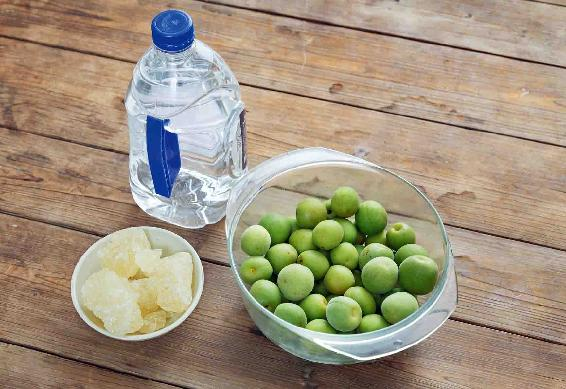
原料：青梅2斤（1千克），白酒或黄酒3斤（1.5升），老冰糖（或红糖、蜂蜜）半斤到1斤（250〜500克）。
做法：
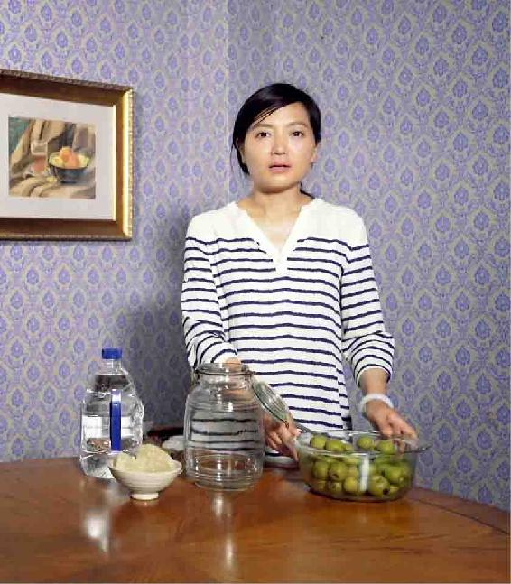
1.先把青梅用盐水泡洗干净，水分沥干，放进一个大的广口玻璃瓶里或者酒坛子里。
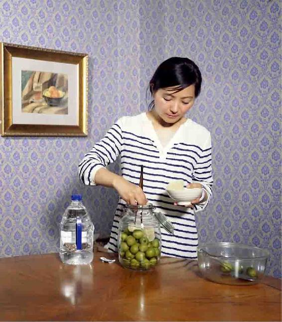
2.往广口瓶里放入所用冰糖的一半。
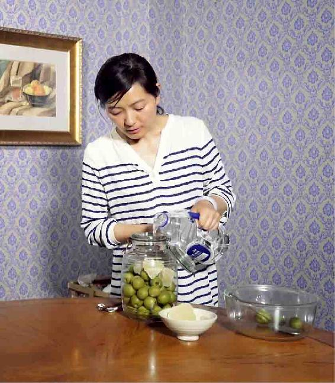
3.把白酒或者黄酒倒进去，倒五六分满就可以了，因为还要往里再加冰糖。
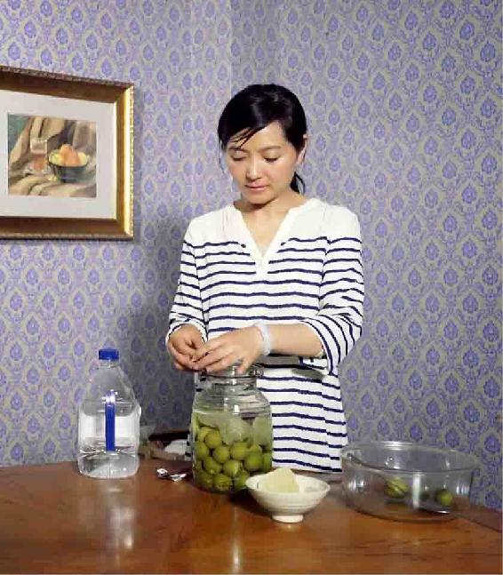
4.盖好盖子，放到阴凉避光的地方。过一两个星期后打开看一下，看放的冰糖是否已经完全溶解了，如果溶解了，再把剩下的一半冰糖放入瓶中。三个月后，青梅酒就可以喝了。
1.用纯粮食酒
以前我曾建议朋友们泡青梅酒用的白酒，高度、低度都可以。但是后来我去五粮液、泸州老窖等知名白酒产地考察学习才知道，粮食酿造的白酒原浆，是没有低度数的，都在50几度以上。而低度的白酒是最近几十年的发明，是用高度酒加水稀释，并用一些助剂去除加水后形成的沉淀物而做出来的。
所以还是用高度白酒来泡吧，选择纯粮食酿造的高度白酒泡，青梅也不容易坏。
女性朋友要是喝青梅酒的话，用黄酒泡也很好。当然前提也是要选纯粮食酿造、无添加的黄酒。
2.因为青梅很酸，所以需要加一点冰糖来调和酸味
市面上的冰糖有白冰糖、黄冰糖两种。
黄冰糖就是我们俗称的老冰糖，是用传统方法制作出来的。我推荐您买黄冰糖，因为黄冰糖的营养成分更多，而白冰糖就是黄冰糖提纯之后的产物，所以最好是用老式的黄冰糖，这样泡出来的青梅酒，颜色也会更漂亮。
不过现在老冰糖比较难找，找不到的话，可以用红糖或蜂蜜来代替。
至于糖的用量，我写的是半斤（250克）到一斤（500克），为什么呢？因为糖的量是可以根据每个人的口味自调的。如果您喜欢甜味多一点，就多加一点；如果您喜欢甜味少点，就少加一点，但无论如何都要加一些，不然的话，泡出来的青梅酒就太酸了。
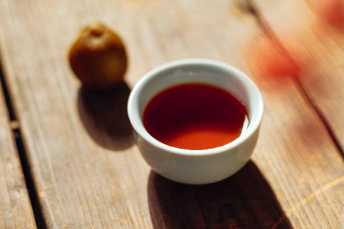
1.酒梅干怎么做才好吃？
其实，一坛青梅酒最吸引我的并不是酒，而是里面泡的酒梅。
泡过酒的青梅，是一定要留下的，它是可以吃的，而且味道还很不错。
当酒喝完以后，里面剩下的酒梅可以取出来，放在太阳底下晒成酒梅干。太阳晒过以后，酒梅的表皮就会收缩、发黑，变得跟话梅似的，您可以把它保存起来当零食吃。
如果您泡青梅酒的时候，放的糖比较少，那酒梅吃起来就有点酸，口味可能不是太好。这时候，您可以把酒梅单独放入一个玻璃瓶里，然后撒一层白糖，铺一层酒梅，再撒一层白糖，再铺一层酒梅，这样腌制一段时间后吃它，味道就会变得很好。
酒梅捞出来，放在太阳底下晒，不仅是为了让它更好保存，也是为了让它的酒味挥发。晒干了的酒梅，酒味会完全挥发掉，小孩子也是可以适量吃一点儿的。
刚捞出来的酒梅，也是可以吃的，不过这时候酒味重，只能给大人吃，而且平时不喝酒的人不要一次吃太多。因为刚捞出来的酒梅酒香四溢，有的人会不知不觉吃过量，会有一点醉酒的感觉。
2.酒梅干的作用：消食、开胃、止咳
酒梅干有两大功效：
第一，可以消食、开胃。
第二，有一定的止咳作用。
如果小孩子在夏天或者秋天的时候，觉得喉咙干痒，想要咳嗽，吃一两个酒梅干就能缓解。
梅子除了用酒来泡，制作成酒梅干外，还可以用盐腌制，做成盐梅干。
我们在吃日本料理的时候，桌子上往往会有一个小碟，里面放上一颗用盐腌制的青梅。这是日本人在早上用来就粥的一个小咸菜。其实，这个方法是从中国传过去的，这是中国人以前的吃法。
梅子作为小咸菜和调料，在中国应用得非常早，它是古人最早使用的酸味调味料。在醋发明以前，古人每天做菜的时候怎么加酸味呢？就是放梅子。
《尚书·说命下》记载：“若作和羹，尔惟盐梅。”什么意思？是说这个人的作用是不可或缺的，就像做菜时必须用到的盐和梅一样重要。这说明当时古人已把梅子当成每天必用的酸味调味料了。
先秦时期，人们已经把梅子作为烹调时的一种酸味调味料了。
现在出土的青铜器，专家不止一次发现，在同一件烹饪的器具里，有梅核和动物的骨头。这说明什么呢？当时古人一定是把梅子和动物的肉一起来煮的。
这种做法其实很科学，梅子既可以去掉肉的腥味，还可以解除肉的油腻。当然，这种做法也保留到了现代。最典型的是吃广东菜里的烧鹅时，必定会配上一碟酸酸甜甜的梅子酱，就是用来解鹅肉油腻的。这也算是古人把梅子和肉一起来烹调的一个遗存。
当我们把梅子和肉一起来烹调的时候，可以解除肉的油腻，把梅子吃下去以后，又可以分解体内的油脂。
梅子分解油脂的能力是非常强的，可以说是一种天然的降脂药。
为什么梅子能分解油脂呢？因为它含有非常丰富的果酸，比如，柠檬酸、苹果酸，都是分解油脂的能手。所以，日本人很喜欢在早餐的时候吃一点梅子，这也是帮助他们的身体变得苗条的一种方式。
我们每天可以吃一点梅子，不管是吃酒梅干还是吃盐梅干。
读者评论：青梅酒颜色很漂亮
小花_rib：昨天把去年泡的青梅酒滤出来了，颜色很漂亮，有点甜。我觉得青梅更好吃了，不酸了，吃上去像吃话梅，都停不下来！所以今年又泡了，期待明年的青梅。
一丹_k：青梅酒已经泡好了，就等着天气好有阳光的时候，把去年泡的青梅酒滤出来，晒梅干。
zhxiao：泡了两年的青梅酒喝起来好香哦！
A芬Fen：我爸每年都泡青梅酒，他特别喜欢喝，感谢老师的分享。
允斌解惑：什么时间喝青梅酒最好？
赵玲：进入6月份还可以做青梅酒吗？
允斌：可以的，晚熟青梅的药性更好。
静静聆听：青梅酒已经做好一个月了，但我发现酒上面漂浮有白色的东西，这是正常的吗？
允斌：可能发霉了。容器不干净，或是酒有问题。
梦醉西楼：陈老师，青梅泡上一年后，要捞出来吗？
允斌：可以一直泡着，时间久一点更好喝。
春儿： 陈老师，做青梅酒您是用黄冰糖，后来青梅酒配方却用红糖，请问有区别吗？
允斌：以前的是老冰糖，而现在大都是工业冰糖，所以改用红糖了。
兰柯：什么时间喝青梅酒最好？想春天喝，又担心酸味收敛了肝气。
允斌：到夏天再喝。
太阳：去年的梅子酒，现在可以把梅子拿出来晾成酒梅干吗？
允斌：可以。
淑芬：芒种节气，梅子酒和毛樱桃酒可以交替着喝吗？
允斌：可以。
梅子在刚开始的时候是青色的，还没有完全成熟，称为青梅，但我们已经可以吃了。等到梅子完全成熟的时候，它的颜色就变黄了，称为黄梅。
青梅和黄梅之间的功效还是有一点点差别的。青梅主要是入肝经，作用是帮助肝脏解毒、消食、解腻、降脂。另外，青梅解酒毒的功效很好。跟青梅相比，黄梅还有一个健脾和胃的功效。
一般来说，小满节气之后，梅子就开始变黄了，但它还没有完全熟透。这种九成熟的梅子，是最适合用来做一种特别好吃的冰梅酱的。也就是我之前讲过的，在吃广东菜烧鹅时，会配上的一碟冰梅酱。
冰梅酱熬出来以后，是酸酸甜甜的，而且酸而不涩，甜而不腻，颜色也非常好看。它看起来有一种晶莹剔透的感觉，这就是冰梅酱名字的由来。
一般小孩子都会很喜欢吃冰梅酱，我家每次做好的冰梅酱，都等不到用来做菜，小孩子就会来偷吃。
冰梅酱可以当果酱吃，比如，抹面包片、抹馒头片，都是非常好吃的；也可以做蘸料，比如，在吃烤肉的时候，不管是烤鸡、烤鸭、烤鹅，都可蘸一点儿冰梅酱来吃，滋味也是非常美的。
带有梅核的酱怎么吃呢？
可以取一点出来放在锅里，然后加一点水煮一下，煮出来后就像一道酸梅汤那样好喝，小孩子应该会很喜欢喝的。
请记住，装冰梅酱的玻璃瓶一定不能沾油，最好先用开水煮一下消消毒。每次取冰梅酱的时候，一定要用干净的、没有沾过油的勺子，这样冰梅酱才不会变质。
我们在市场上买的很多果酱，厂商为了防止它变质，可能或多或少都做了一点防腐处理，而我们在家自己熬制的冰梅酱，没有做过防腐处理，因此，一定要注意保持它的干净卫生，这样才不会变质。
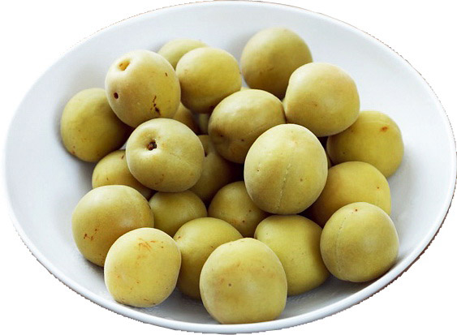
原料：一斤（500克）黄梅（九成熟），半斤（250克）黄冰糖或红糖，少许的盐。
做法：
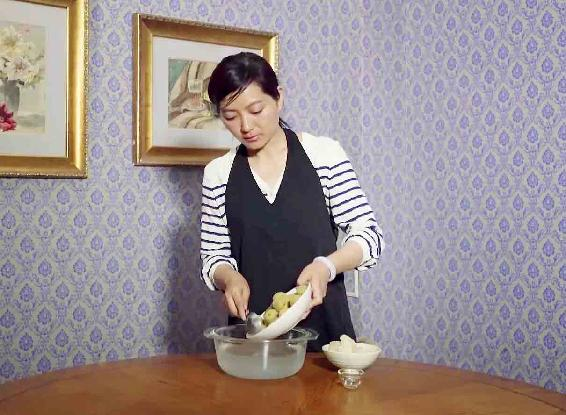
1.把黄梅洗干净，用盐凉水（水里加上大约10克的盐）泡上24小时，以充分地去除黄梅的涩味，这样熬出来的酱才好吃。
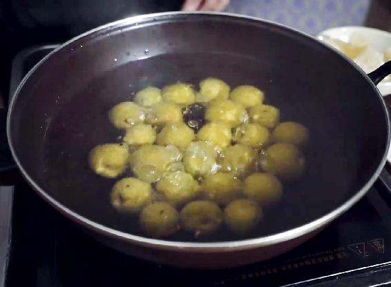
2.锅里放入冷水，然后把盐水泡过的黄梅放进去，用中火煮开。
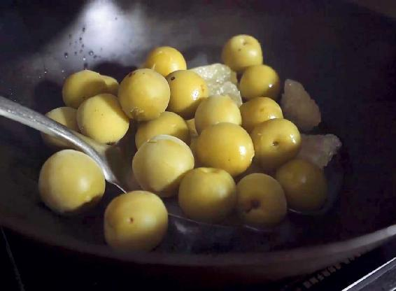
3.煮开以后，把水倒掉留下黄梅，然后直接用锅铲把煮过的黄梅压碎。压得越碎越好，要让果肉和果核分离开。
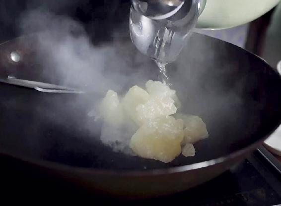
4.再往锅里加少量的水，放入糖，再加一丁点盐，大约是1克的样子。为什么要加一点盐呢？其实，盐能提出糖的甜味，这样吃起来会更甜。
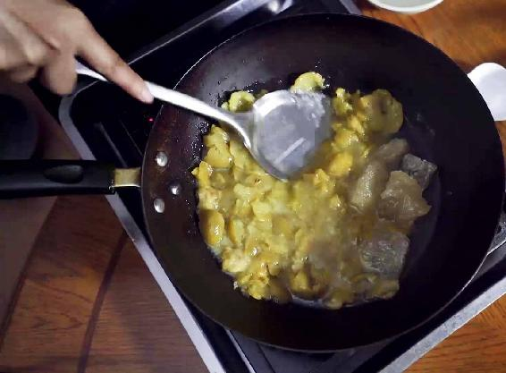
5.用小火熬制，一边熬，一边用锅铲翻动，一直熬到果肉和糖完全地融合、锅里开始冒出大泡泡时，就可以关火了。把梅核单独挑出来，放在一个瓶子里备用。剩下的没有核的果酱，装在一个玻璃瓶里，晾凉以后，放入冰箱保存，这个就是冰梅酱了。
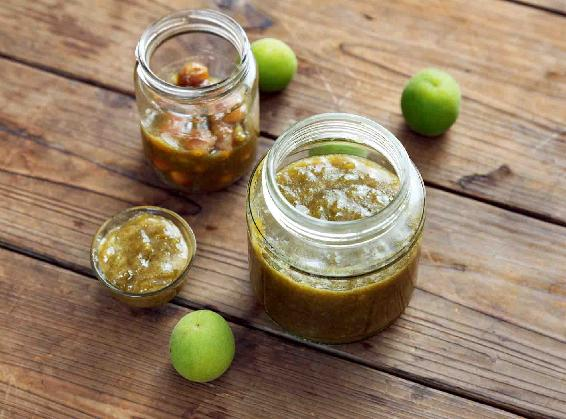
冰梅酱除了可以消食、解腻外，还有什么好处呢？
1.开胃解腻
进入夏天后，由于天气越来越热，有些朋友可能就会变得没有胃口，而吃了冰梅酱以后很开胃，能促进消化、解油腻。
2.调理“鸡皮肤”
冰梅酱可以保持皮肤的健康，特别是对一些肝气比较旺、脾气比较急躁的朋友来说，通常他们会有一个慢性毛囊角化性皮肤病的问题。主要表现为在脸的两侧，靠近耳朵的位置，有一些细细小小的，像粉刺的东西，一些朋友甚至会长在上臂的外侧。这样的一些小点点长期都不消，也被俗称为“鸡皮疙瘩”“鸡皮肤”。
这是皮肤角质化的表现，如果经常吃冰梅酱，能促进皮肤的新陈代谢，很好地调理毛囊角化症状。
3.生津止渴、解暑
到了夏天，风热会经常使我们感觉到口干舌燥，这时候吃一点冰梅酱，有生津止渴、解暑的作用。
您也不妨经常给小孩子吃一点冰梅酱，因为冰梅酱里的黄梅有健脾和胃的作用。
读者评论：冰梅酱，家里大人小孩都爱吃
狸猫童鞋：每个节气前都会认真地看老师的书，看看下一个节气有没有要提前准备的东西，所以早早地在网上预订了青梅，泡好了青梅酒，熬好了冰梅酱。冰梅酱熬出的果胶很有弹性，有股橘子和山楂的味道，抹在面包上味道很赞。
得月湖主：前两天做了冰梅酱，超级好吃，兑了水喝，超级爱。和在外面买的奶茶果汁喝了感觉不解渴不一样，喝了超舒服，家里宝宝也很喜欢。做了两斤完全不够，还得再做些。
心淡如水：梅子酱太好吃了，酸酸甜甜的。
薰衣草：冰梅酱真好吃，酸酸甜甜的，口感很爽，大人小孩都爱吃，喝粥的时候可以拿出来当小菜。跟着老师养生真好，生活变得有趣多了！